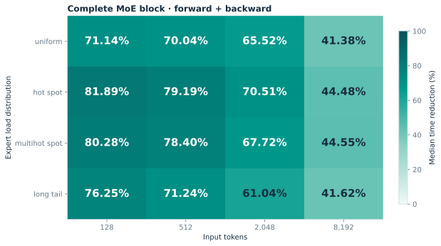
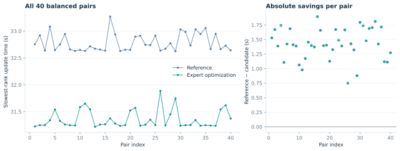
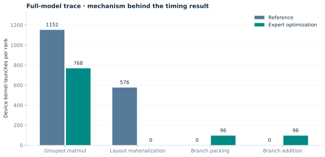
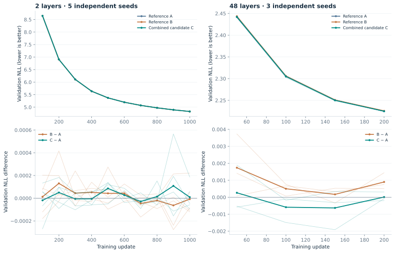
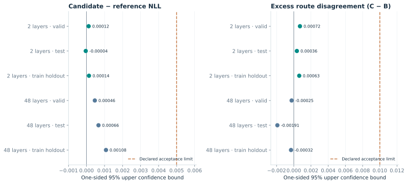
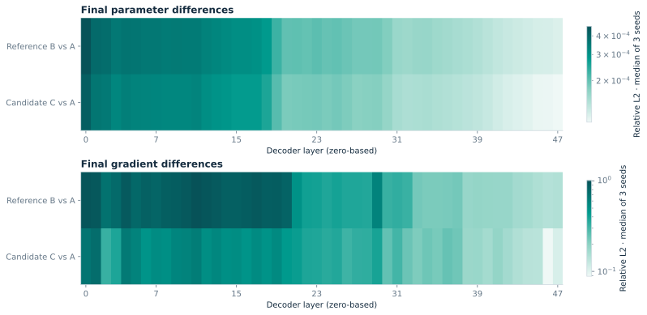
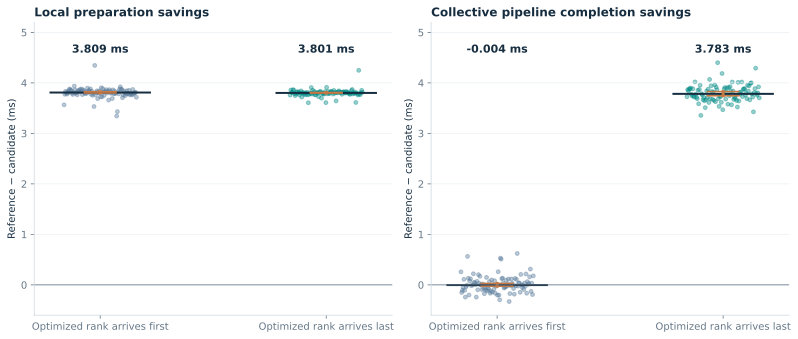

01 / THE RESULT
Preserve the computation.
Change its physical execution.
A layout-aware expert path reduces complete MoE block time by 67.89% across 16 measured cases. In a deterministic, full 48-layer FSDP update, the same computation change reduces time by 4.49%. A separate communication experiment explains why a faster local operation does not always shorten collective completion.
Complete-block time reduction
Geometric mean · 16 cases
Full-update time reduction
95% CI: 4.08–4.80%
GMM layout materializations
Per rank · full-update profile
The study connects tensor storage layout, low-precision backward rules and distributed execution. It contributes a branch-preserving grouped backward, weight-gradient computation in the physical parameter layout, and a controlled test of how local preparation savings depend on collective arrival order.
02 / EXECUTION DESIGN
Two branches. Separate rounding. One grouped execution.
Qwen3 packs the gate and up projections together, but splitting them into inconvenient tensor views can still trigger expensive layout materialization. The optimized forward consumes the packed weights directly. The backward uses 2E internal groups for E experts: gate and up contributions remain separate, each rounds to BF16, and their results are then added. Weight gradients are produced in the parameter’s physical orientation.
Keep routing
Same expert IDs, order, selected weights and token mapping.
Group the branches
Pack gate/up gradients into separate internal groups. Keep BF16 branch writes.
Match storage
Generate physical-layout weight gradients; combine the two input-gradient branches.
The added packing and addition work is included in complete forward/backward measurements. Normal FSDP initialization registers the implementation and exercises it through the real training engine.
03 / MEASURED PERFORMANCE
From the complete expert block to the full model.

All 16 cases preserve exact outputs and gradients. The geometric mean time reduction is 67.89%; even the smallest measured reduction is 41.38%. Local gains are measured separately from the full update, which also includes attention, normalization, communication and optimizer work.

All 16 ranks pass the deterministic same-state checks: routing, outputs, loss, gradients, parameter updates and Adam moments. This is a fixed-batch actor update, with 30 warmups per arm and 40 measured pairs. Independent profiling links the gain to a concrete change in device execution.

04 / EVIDENCE FROM TRAINING SNAPSHOTS
Look beyond a single update.
Long-trajectory experiments compare reference A, independent reference repeat B and combined candidate C under the original runtime with native normalization. C includes both the expert backward and the registered communication cast/scale hook. Two-layer runs use five seeds and 1,000 updates; 48-layer runs use three seeds and 200 updates.


All declared NLL and excess-routing quality limits pass for this combined implementation. The strongest full-model NLL upper bound across the three splits is 0.001080 nats/token, below the fixed 0.005 limit. The stored states also let us examine a different question: how much the internal training states differ after independent trajectories.

Both repeated reference training and candidate training can accumulate state differences under native execution. The heatmaps retain those observations alongside the quality results; small changes in evaluation loss do not establish equality of the underlying gradients.
05 / A CONTROLLED SYSTEMS EXPERIMENT
The same local saving can have a different system effect.
A 623,120,640-element gradient bucket is reduced over 16 devices. Only rank 0 switches from separate cast/divide operations to fused preparation. Independent release offsets make the optimized rank arrive first or last; all 400 measured arms satisfy the prescribed arrival order.

Preparation becomes about 53% faster in both regimes. The arrival intervention exposes when that local improvement reaches common completion, providing a concrete scheduling explanation rather than extrapolating a kernel speedup to training throughput.
06 / VALIDATION SCOPE
Each conclusion has its own experiment.
| Experiment | Supported conclusion | Boundary |
|---|---|---|
| Expert computation | Exact block checks; 4.49% deterministic full-update reduction | One formal full-model timing session; fixed batches and synthetic advantages |
| Original-runtime full-model numerical checks | Non-normalization parameter checks pass | The existing strict candidate comparison fails for 91 normalization gradients and 2 updates; local diagnostics do not explain every full-model discrepancy |
| Long-trajectory quality | Declared seed-level NLL and ordered-route limits pass | Combined expert/communication implementation; teacher-forced evaluation, not rollout quality or exact training-state equivalence |
| Collective arrival intervention | Arrival-dependent propagation of local savings | Deliberate 50 ms release gap and preparation synchronization; not asynchronous actor throughput |
| Separate hierarchical-reduction study | Deterministic speedup has a quality tradeoff | Its routing and fixed-task rollout gates fail; mean success-rate change is −9.38 percentage points. It is distinct from the passing quality experiment above |
All measurements use Ascend 910B and the pinned Qwen3/HF/FSDP stack. Cross-hardware generalization is unmeasured. The public report contains exported metrics and plot data; full model weights, per-rank training-state payloads and device traces remain in the local research workspace.
07 / REPRODUCIBLE FIGURES
Follow the numbers back to the evidence.
The plots use 1,600 complete-block pairs, 40 full-model actor pairs, 186 snapshot evaluation records, 576 layer-state observations and 400 controlled-arrival arms. Global evaluation and state metrics are read once from rank 0 because every rank stores the same globally reduced metrics; ranks are not counted as independent quality samples. Plot exports are checked against the original reported medians and final seed-level quality means.
Every figure is available as vector SVG, publication-ready PDF and PNG. The archive includes CSV tables, the plotting script and its pinned Python dependencies. To regenerate the figures after extracting it:
python -m pip install -r requirements.txt python plot_results.py
Model and implementation identifiers
Model: Qwen/Qwen3-30B-A3B-Instruct-2507
Model revision: 0d7cf23991f47feeb3a57ecb4c9cee8ea4a17bfe
verl base: 8e48d72de4766228c36623c90f9f5c49ee5b45f3